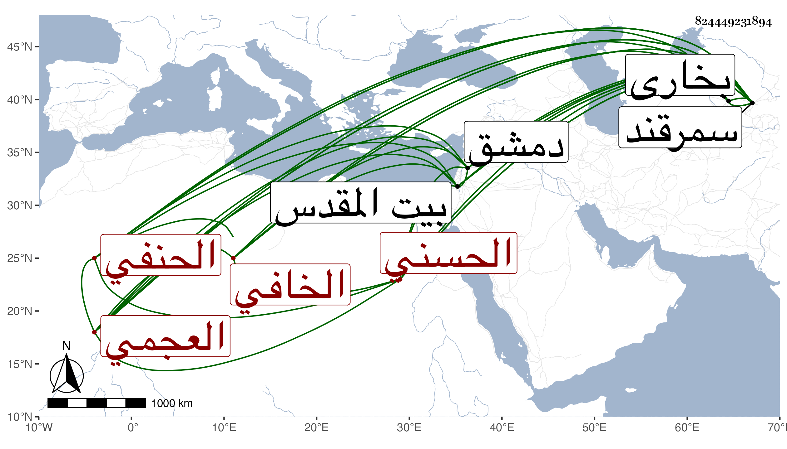

0902Sakhawi.DawLamic.ITO20230111-ara1.EIS1600.824449231894
Biography ID: 824449231894
681
محمد بن شهاب بن محمود بن محمد بن يوسف بن الحسن الحسني نسبة لجده المذكور العجمي الخافي الحنفي نزيل سمرقند . ولدف في ربيع الأول سنة سبع وسبعين وسبعمائة بمدينة سلومد بفتح المهملة وضم اللام وكسر الميم وآخره مهملة كرسي خواف ، وقرأ بها القرآن وأخذ الفقه عن مولانا محمد المدعو عبد الرحمن بن محمد البخاري خال العلاء البخاري والسراج البرهاني كلاهما ببخارى والجامع الكبير من كتبهم عن أبي الوقت عبد الأول بن محمد بن عماد الدين البرهاني بسمرقند في آخرين بأماكن متفرقة وأصول الفقه عن أولهم ومحمد بن محمد الحصاري والسيد الجرجاني وسمع منه من تصانيفه شرحه للمفتاح وللمواقف للعضد ولتذكرة الطوسي في الهيئة وحاشيته على شرح المطالع وبعض الكشاف والبيضاوي وأشياء وعنهما أخذ علم الكلام وعنهما وعن أول شيوخه أخذ العربية وكذا أخذها عن مولانا ركن الدين الطواشي الخوافي وهو أعلمهم وأزهدهم وعنه وعن السيد وغيرهما المنطق وعن أول شيوخه والسيد وابن عبد الحميد الشاشي المعاني والبيان والبديع وقرأ الطب على أول شيوخه ومولانا فضل التبريزي سمع عليه الموجز وشرحه له والهندسة على مولانا نصر الله الخاقاني الخوارزمي والسيد وعليهما قرأ الهيئة وكذا قرأها مع الهندسة وعلم الوقت على الخيوقي الخوارزمي الصوفي الزاهد المتجرد ولم يكن يعرف غيرها والحساب على أبي الوقت ثالث شيوخه ونصر الله القاآني وسمع الحديث على ابن الجزري ومحمد بن محمد البخاري الحافظي الشرعي ومحمد الحافظي الطاهري الأوشى في آخرين ، وصنف كتابا في العربية نحو ثلاثة كراريس متوسطة عمله في ليلة واحدة لم يراجع فيه كتابا وآخر قدره أو أقل في المنطق عمله في يوم أو أقل ، إلى غيرها مما لم يتم كحاشية لشرح المفتاح للتفتازاني وللعضد وللمنهاج الأصلي وللطوالع ، وقدم حاجا في سنة خمس وأربعين فاستدعاه الظاهر جقمق فوفد عليه ولقيه بعض الفضلاء فقال إنه كان عالما مفننا متقنا بحرا في العلوم يكاد يستحضر الكشاف بالحرف وكذا غيره من المعقولات ، أجمع الأعاجم على أنهم لم يروا أحفظ منه مع حسن التصرف بل ممن كان يمدحه أبو الفضل المغربي فيما قاله البقاعي وقال إنه كان حسن الكلام ذا عقل وافر وسياسة ظاهرة وخلق رضي يقطع مجلسه بشكر العرب وترجيح بلادهم على بلاده مع فصاحة وجودة ذهن وحسن تصرف في العلم ويقال إنه أحد شيوخ الشمس الشرواني وإن الناصري ابن الظاهر أضافه وجمع العلماء له فكان من إنصافه أنه ما تكلم مع أحد منهم إلا في الفن الذي يذكر به ولم يبد سؤالا إنما كان يسأل فيتكلم وأنه جارى السعد بن الديري في التفسير ولم ينقله لغيره بحيث قضى منه العجب ويقال إنه كان متمولا وأنه بنى مدرسة في سوق البراذعيين من سمرقند كما سلف في محمد بن شاه رخ قريبا وكذا أكرمه أبوه الظاهر ، ثم رجع فزار بيت المقدس ودخل دمشق مريضا ثم سافر منها إلى بلاده فقيل إنه مات في سنة اثنتين وخمسين والله أعلم بهذا كله .
